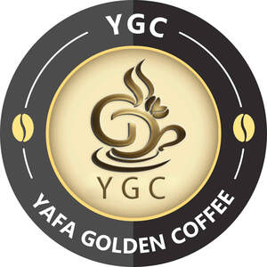

Trade Mark Journal No.2025/026 27 June 2025
UK00004218308 12 June 2025 (30,35,40,43)

- Class 30
- Coffee; Coffee substitutes [artificial coffee or vegetable preparations for use as coffee]; Coffee essences for use as substitutes for coffee; Coffee extracts for use as substitutes for coffee; Coffee beverages; Decaffeinated coffee; Coffee drinks; Mixtures of malt coffee with coffee; Coffee (Unroasted -); Unroasted coffee; Coffee bags; Coffee beans; Coffee in whole-bean form; Coffee beverages with milk; Chocolate coffee; Coffee based beverages; Coffee flavorings; Coffee based drinks; Iced coffee; Beverages made from coffee; Beverages made of coffee; Instant coffee; Coffee oils; Beverages with coffee base; Beverages with a coffee base; Unroasted coffee beans; Mixtures of malt coffee extracts with coffee; Coffee, teas and cocoa and substitutes therefor; Chicory for use as substitutes for coffee; Flavoured coffee; Powdered coffee in drip bags; Malt coffee; Coffee essences; Coffee flavourings; Roasted coffee beans; Caffeine-free coffee; Ground coffee beans; Drip bag coffee; Prepared coffee and coffee-based beverages; Mixtures of coffee essences and coffee extracts; Mixtures of coffee; Coffee mixtures; Coffee capsules; Coffee concentrates; Ground coffee; Ice beverages with a coffee base; Coffee extracts; Mixtures of coffee and chicory; Prepared coffee beverages; Coffee pods; Coffee [roasted, powdered, granulated, or in drinks]; Mixtures of malt coffee with cocoa; Cappuccino; Coffee in brewed form; Espresso; Barley for use as a coffee substitute; Coffee essence; Mixtures of coffee and malt; Malt coffee extracts; Extracts of coffee for use as flavours in beverages.
- Class 35
- Wholesale services in relation to coffee; Retail services in relation to coffee.
- Class 40
- Grinding of coffee; Coffee roasting and processing.
- Class 43
- Coffee shops; Coffee shop services; Coffee bar services; Coffee supply services for offices [provision of beverages]; Cafe services.
Osamah Hamood Alsadi